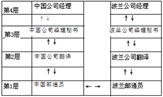
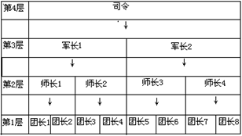
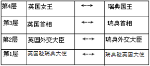
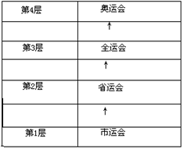

一、单选题（共20题，每题1.5分，共计30分；每题且仅有一个正确选项）
| 1. | 计算机如果缺少（ ），将无法正常启动。 |
|---|
| 2. | （ ）是一种先进先出的线性表。 |
|---|
| 3. | 目前计算机芯片（集成电路）制造的主要原料是（ ），它是一种可以在沙子中提炼出的物质。 |
|---|
| 4. | 十六进制数9A在（ ）进制下是232。 |
|---|
| 5. | （ ）不属于操作系统。 |
|---|
| 6. | 如果一棵二叉树的中序遍历是BAC，那么它的先序遍历不可能是（ ）。 |
|---|
| 7. | 目前个人电脑的（ ）市场占有率最靠前的厂商包括Intel、AMD等公司。 |
|---|
| 8. | 使用冒泡排序对序列进行升序排列，每执行一次交换操作系统将会减少1个逆序对，因此序列 5，4，3，2，1需要执行（ ）次操作，才能完成冒泡排序。 |
|---|
| 9. | 1946年诞生于美国宾夕法尼亚大学的ENIAC属于（ ）计算机。 |
|---|
| 10. | 无论是TCP/IP模型还是OSI模型，都可以视为网络的分层模型， 每个网络协议都会被归入某一层中。 如果用现实生活中的例子来比喻这些“层”，以下最恰当的是（ ）。 |
|---|
|
 |
|
 |
|
 |
|
 |
| 11. | 矢量图（Vector Image）图形文件所占的贮存空间比较小，并且无论如何放大、缩小或旋转等都不会失真，是因为它（ ）。 |
|---|
| 12. | 如果一个栈初始时为空，且当前栈中的元素从栈顶到栈底依次为a，b，c，另有元素d已经出栈，则可能的入栈顺序是（ ）。 |
|---|
| 13. | （ ）是主要用于显示网页服务器或者文件系统的HTML文件的内容，并让用户与这些文件交互的一种软件。 |
|---|
| 14. | （ ）是目前互联网上常用的E-mail服务协议。 |
|---|
| 15. | （ ）就是把一个复杂的问题分成两个或更多的相同类似的子问题，再把子问题分解成更小的子问题……直到最后的子问题可以简单地直接求解。而原问题的解就是子问题解的并。 |
|---|
| 16. | 地址总线的位数决定了CPU可直接寻址的内存空间大小，例如地址总线为16位，其最大的可寻址空间为64KB。如果地址总线是32位，则理论上最大可寻址的内存空间为（ ）。 |
|---|
| 17. | 蓝牙和Wi-Fi都是（ ）设备。 |
|---|
| 18. | 在程序运行过程中，如果递归调用的层数过多，会因为（ ）引发错误。 |
|---|
| 19. | 原字符串中任意一段连续的字符所组成的新字符串称为子串。则字符“AAABBBCCC”共有（ ）个不同的非空子串。 |
|---|
| 20. | 仿生学的问世开辟了独特的科学技术发展道路。人们研究生物体的结构、功能和工作原理，并将这些原理移植于新兴的工程技术中。以下关于仿生学的叙述，错误的是（ ） |
|---|
二、问题求解（共2题，每题5分，共计10分）
| 1. | 如果平面上任取n个整点（横纵坐标都是整数），其中一定存在两个点，它们连线的中点也是整点，那么n至少是： |
|---|
| 2. | 在NOI期间，主办单位为了欢迎来自各国的选手，举行了盛大的晚宴。 在第十八桌，有5名大陆选手和5名港澳选手共同进膳。 为了增进交流，他们决定相隔就坐，即每个大陆选手左右旁都是港澳选手，每个港澳选手左右旁都是大陆选手。 那么，这一桌一共有 种不同的就坐方案。 |
|---|
三、阅读程序写结果（共4题，每题8分，共计32分）
| 1. |
#include <iostream>
using namespace std;
int a,b,c,d,e,ans;
int main(){
cin >> a >> b >> c;
d=a+b;
e=b+c;
ans=d+e;
cout << ans << endl;
return 0;
}
|
|---|---|
| 输入： 1 2 5 | |
| 输出： |
| 2. |
#include <iostream>
using namespace std;
int n,i,ans;
int main(){
cin >> n;
ans=0;
for(i=1;i<=n;i++)
if(n%i==0) ans++;
cout << ans << endl;
return 0;
}
|
|---|---|
| 输入：18 | |
| 输出： |
| 3. |
#include <iostream>
using namespace std;
int n,i,j,a[100][100];
int solve(int x,int y){
int u,v;
if(x==n) return a[x][y];
u=solve(x+1,y);
v=solve(x+1,y+1);
if(u>v) return a[x][y]+u;
else return a[x][y]+v;
}
int main(){
cin>>n;
for(i=1;i<=n;i++)
for(j=1;j<=i;j++) cin>>a[i][j];
cout << solve(1,1) << endl;
return 0;
}
|
|---|---|
| 输入：5 | |
| 2 | |
| -1 4 | |
| 2 -1 -2 | |
| -1 6 4 0 | |
| 3 2 -1 5 8 | |
| 输出： |
| 4. |
#include <iostream>
#include <string>
using namespace std;
int n,i,j,ans;
string s;
char get(int i){
if(i<n) return s[i];
else return s[i-n];
}
int main(){
cin>>s;
n=s.size();
ans=0;
for(i=1;i<=n-1;i++){
for(j=0;j<=n-1;j++)
if(get(i+j)<get(ans+j)){
ans=i;
break;
}
else if(get(i+j)>get(ans+j)) break;
}
for(j=0;j<=n-1;j++) cout << get(ans+j);
cout << endl;
return 0;
}
|
|---|---|
| 输入：CBBADADA | |
| 输出： |
四、完善程序（前2空每空2分，后8空每空3分，共计28分）
| 1. | （坐标统计）输入n个整点在平面上的坐标。 对于每个点，可以控制所有位于它左下方的点（即x、y坐标都比它小），它可以控制的点的数目称为“战斗力”。 依次输出每个点的战斗力，最后输出战斗力最高的点的编号（如果若干个点的战斗力并列最高，输出其中最大的编号）。 |
|---|
#include <iostream>
using namespace std;
const int SIZE =100;
int x[SIZE],y[SIZE],f[SIZE];
int n,i,j,max_f,ans;
int main(){
cin>>n;
for(i=1;i<=n;i++) cin>>x[i]>>y[i];
max_f=0;
for(i=1;i<=n;i++){
f[i]= ;
for(j=1;j<=n;j++){
if(x[j] < x[i] && )
;
}
if( ){
max_f=f[i];
;
}
}
for(i=1;i<=n;i++) cout << f[i] << endl;
cout << ans << endl;
return 0;
}
|
| 2. | （排列数）输入两个正整数n，m（1 < n < 20,1 < m < n），在1~n中任取m个数，按字典序从小到大输出所有这样的排列。 例如： |
|---|---|
| 输入：3 2 | |
| 输出：1 2 | |
| 1 3 | |
| 2 1 | |
| 2 3 | |
| 3 1 | |
| 3 2 |
#include <iostream>
#include <cstring>
using namespace std;
const int SIZE =25;
bool used[SIZE];
int data[SIZE];
int n,m,i,j,k;
bool flag;
int main(){
cin>>n>>m;
memset(used,false,sizeof(used));
for(i=1;i<=m;i++){
data[i]=i;
used[i]=true;
}
flag=true;
while(flag){
for(i=1;i<=m-1;i++) cout << data[i] << " ";
cout << data[m] << endl;
flag= ;
for(i=m;i>=1;i--){
;
for(j=data[i]+1;j<=n;j++)
if(!used[j]){
used[j]=true;
data[i]= ;
flag=true;
break;
}
if(flag){
for(k=i+1;k<=m;k++)
for(j=1;j<= ;j++)
if(!used[j]){
data[k]=j;
used[j]=true;
break;
}
;
}
}
}
return 0;
}
|